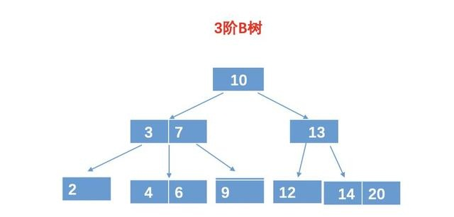
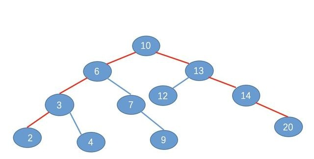
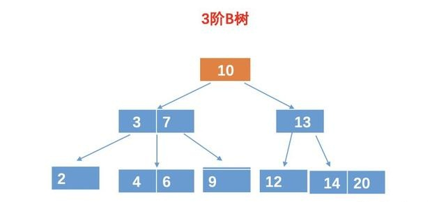
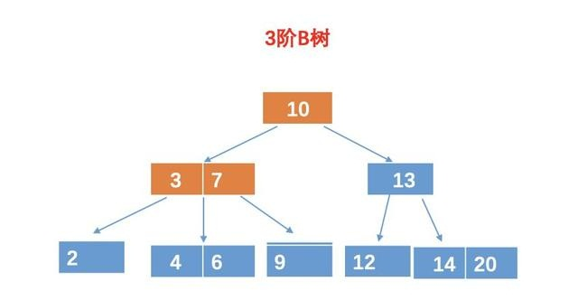
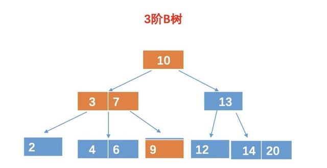

什么是B树？为啥文件索引要用B树而不用二叉查找树？
Java的小本家 2019-10-17 15:19:22
一、面试被怼
面试官：你知道文件索引、数据库索引一般用什么数据结构来存储吗？
小秋：知道啊，一般都是用树形结构来存储的。
面试官：可以说说为啥用树形结构来存储吗？
小秋：树形结构例如想 B 树，B+ 树，二叉查找树都是有序的，所以查询效率很高，可以再 O(logn) 的时间复杂度查找到目标数据。
面试官：那可以问问文件索引，例如数据库索引一般用哪种树形结构吗？
小秋：大部分用 B+ 树，少部分用 B 树。（B和B+树太他么复杂了，幸好背了下面试题，嘻嘻）
面试官：想问下为什么要用 B 树而不用二叉查找树啊？或者为啥不用哈希表啊？哈希表的查找速度也很快呀。
小秋：哈希表虽然能够再 O(1) 查找到目标数据，不过如果我们要进行模糊查找的话，却只能遍历所有数据，并且如果出现了极端情况，哈希表冲突的元素太多，也会导致线性时间的查找效率的。
面试官：那为啥不用二叉查找树呢？
小秋：这个…..其实我也不知道，当时是在某个面试题中看到的答案的，嘻嘻。
面试官：那你可以回去等通知了….
二、为啥不用二叉查找树呢？
小秋被怼后有点沮丧，跑过来问帅地关于 B 树的一些知识以及心中的疑问。
小秋：今天去面试，面试问我，为啥文件索引要用 B 树而不用二叉查找树，然后我想了下，感觉如果这是一颗比较平衡的二叉查找树的话，那么查找效率是非常快的，难度 B 树还能比它更快吗？
帅地：确实，如果是查找效率（即比较次数）的话，实际上二叉树可以说是最快的了，但是，我们的文件索引是存放在磁盘上的，所以我们不仅要考虑查找效率，还要考虑磁盘的寻址加载次数哦，而这也是我们为什么要用 B 树的原因。
小秋：难道二叉查找树会导致磁盘的加载次数更多吗？可以给我详细讲讲吗？
帅地：可以呀，不过听懂了，觉得我讲的不错，你要记得给我多点赞，转发哦。
小秋：绝对没问题。
三、什么是 B 树？
帅地：要讲懂这个问题，我们先来了解一下什么是 B 树，其实，B 树和二叉查找树一样，都是树，B 树相当于是一棵多叉查找树，对于一棵 m 阶的 B 树具有如下特性：
1、根节点至少有两个孩子。
2、每个中间节点都包含 k - 1 个元素和 k 个孩子，其中 m/2 <= k <= m。
3、每一个叶子节点都包含 k - 1 个元素，其中 m/2 <= k <= m。
4、所有的叶子节点都位于同一侧。
5、每个节点中的元素从小到大排列，节点当中的 k - 1 个元素正好是 k 个孩子包含的元素的值域划分。
小秋：我去，这么复杂，鬼才记得住，我还是选择不学了，呜呜。
帅地：你别着急，这些规则我也记不住，只是让你大致知道一些这些规则，一般情况下，我们并不需要把它的规则完全背起来滴。为了加深理解，我给你举个 B 树的例子吧。例如：

图中是一棵m = 3 的 3 阶 B 树，可以看出，树中有些节点是有多个元素的，并且和二叉查找树一样，左节点的所有元素的值都比父亲元素小。例如对于(3, 7)这个节点。两个元素把这个节点分割成三个值域，即可以有 3 个孩子。2 相当于 3 的左孩子节点，而 （4，6）相当于 3 的右孩子，同时也是 7 的左孩子，而 9 是 7 的右孩子。
和二叉查找树还是很相似滴，都是有序，且左孩子小，右孩子大，只是 B 树的一个节点可以有多个元素，并且有多个分支。而这些分支以及元素的数量规则，可以从上面的五个规则中查找哈。说实话，我也懒的记那些规则，只知道个大概以及 B 树的应用即可。
四、小秋的疑惑
小秋：我知道了，不过这种多叉的树，真的可以比二叉查找树效率更好吗，我怎么觉得不可以呢？
帅地：那你可以说说哦。
小秋：例如，上面的 B 树有 11 个元素，按照这 11 个元素，我们建立一个如下的二叉查找树，如图（我去，这个图片了好长时间，ppt 画的）

下面我们来进行查询效率比较
1、在 B 树中的查找次数。
现在假如我们要查询元素 9,对于 B 树，我们需要进行4次比较，例如：
第一次比较：10 比较，比 10 小，所以再 10 的左孩子找。

第二、三次比较：和 3 比较，比 3 大，这个时候我们还得和 7 比较。

第四次比较：和 9 比较，相等，找到目标树，返回。

所以最终的结果需要 4 次比较。
2、在二叉树的比较结果
为了节省篇幅，我就不逐个比较了，相信你也一眼就看出来了，也是需要 4 次比较。如图

小秋：同样都是四次比较，而且，B 树的每一个节点，如果存放的元素比较多，那么 B 树的比较次数会更多，为什么就说 B 的效率比 二叉查找树快呢？
五、解决疑惑
帅地：确实，如果单单从比较次数看的话，二叉查找树确实不比 B 树差，不过你忽略了一个很重要的点，那就是磁盘的寻址加载次数。
我们知道，在把磁盘里的数据加载到内存中的时候，是以页为单位来加载的，而我们也知道，节点与节点之间的数据是不连续的，所以不同的节点，很有可能分布在不同的磁盘页中。所以对于上面的二叉查找树，我们可能需要进行 4 次寻址加载，如图：

而对于 B 树，由于 B 树的每一个节点，可以存放多个元素，所以磁盘寻址加载的次数会比较少，例如上面的例子中，用 B 树的话，只需要加载 3 次，如图：

我们都知道，在内存的运算速度是非常快的，至少比磁盘的寻址加载速度，快了几百倍，而我们进行数值比较的时候，是在内存中进行的，虽然 B 树的比较次数可能比二叉查找树多，但是磁盘操作次数少，所以总体来说，还是 B 树快的多，这也是为什么我们用使用 B 树来存储的原因。
小秋：原来这样啊，以前一直蒙在鼓里。
帅地：不知道你发现没有，实际上磁盘的加载次数，基本上是和树的高度相关联的，高度越高，加载次数越多，越矮，加载次数越少。所以对于这种文件索引的存储，我们一般会选择矮胖的树形结构。例如有 1000 个元素，如果是二叉查找树的话，高度可能高达 10 层,而如果用 10 阶 B 树的话，只需要三四层即可。
小秋：终于搞懂了，不过我还有个疑问，大部分文件索引或者数据库索引都是用 B+ 树的，而只有小部分才用 B 树，可以问下为什要用 B+ 树而不用 B 树吗？还有，B 树还有其他的应用吗？
帅地：B 树除了会用在少部分的文件索引（数据库索引）外，应用的最多的就是文件系统了。至于为什么要用 B 树而不用 B+ 树，为什么数据库索引大部分用 B+ 树而不用 B 树，我们下节再讲了。
小秋：那我期待着。
帅地：如果觉得有收获，可以帮忙多多转发，点赞，分享哦，这也是我写文章的动力来源。
总结
关于 B 树和 B+ 树，在面试的过程中，还是问的挺多滴，特别是问到数据库的时候，基本会问索引，进而问到 B+ 树，从而也会扯到 B 树。所以掌握着两种树的应用以及原理，是非常重要的，虽然他们的规则很复杂，但是如果是应付面试等，其实不需要背那些规则，只需要知道大概以及知道他们的原理即可。